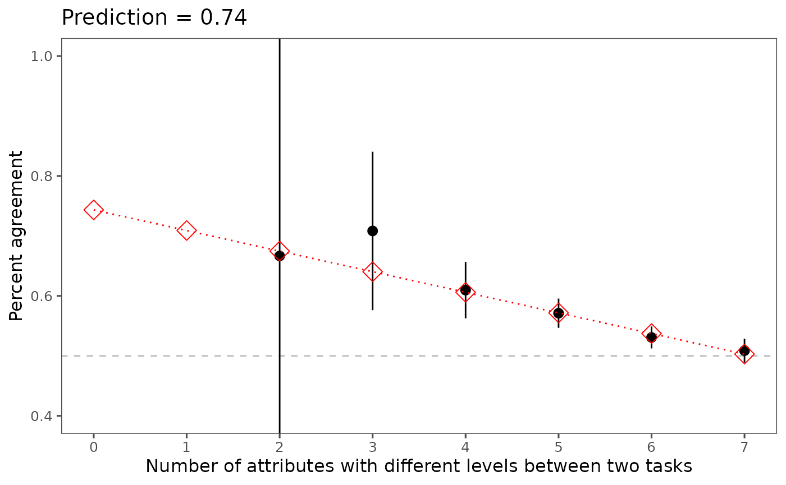

03. Predict the intra-respondent reliability (IRR)
03-predict.RmdWhen there is a repeated task, it is easy to estimate intra-respondent reliability (IRR). When there is not, however, we use an extrapolation method to estimate it instead.
3.2 Read and wrangle data without the repeated tasks
As before, we start by reshaping our data and setting
.repeated to FALSE:
outcomes <- paste0("choice", seq(from = 1, to = 8, by = 1))
out3 <- reshape_projoint(.dataframe = exampleData3,
.idvar = "ResponseId",
.outcomes = outcomes,
.outcomes_ids = c("A", "B"),
.alphabet = "K",
.repeated = FALSE,
.flipped = NULL)3.3 Predict IRR based on the extrapolation method
Then, we pass this data set to the predict_tau function,
which both calculates IRR and produces a figure showing the
extrapolation method visually.
predicted_irr <- predict_tau(out3)
predicted_irr@irr## # A tibble: 8 × 2
## x predicted
## <int> <dbl>
## 1 0 0.743
## 2 1 0.709
## 3 2 0.675
## 4 3 0.640
## 5 4 0.606
## 6 5 0.572
## 7 6 0.537
## 8 7 0.503
predicted_irr@figure